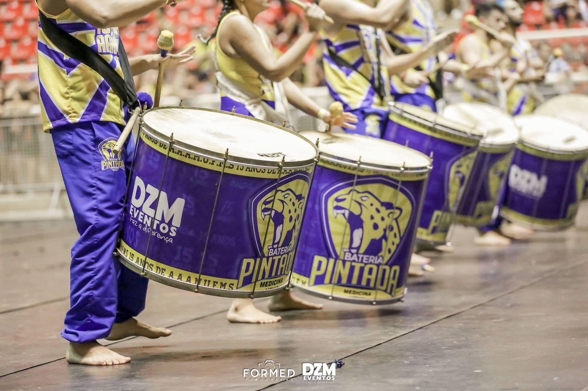
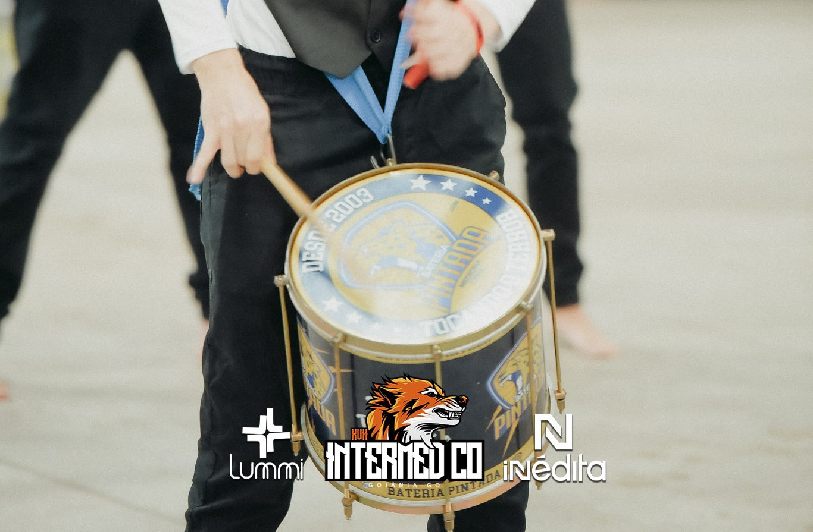
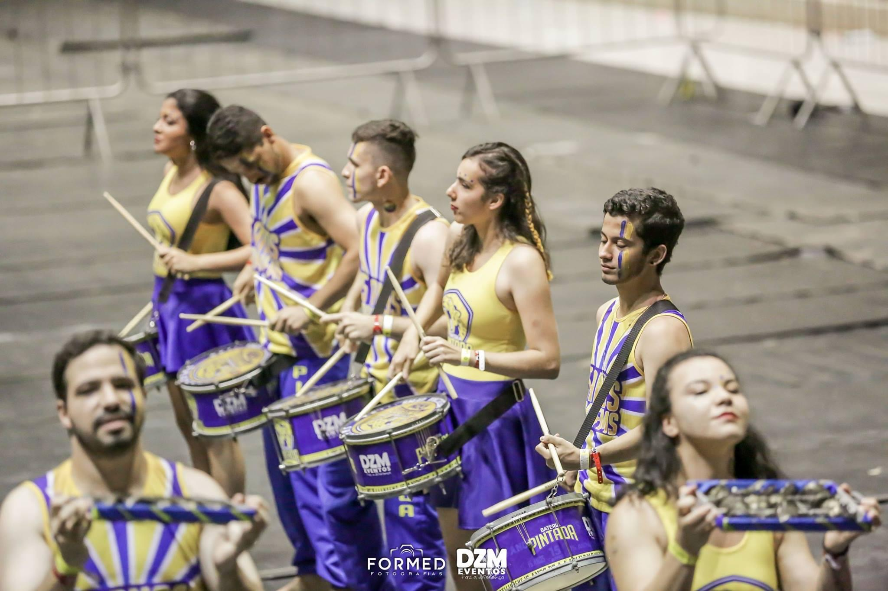
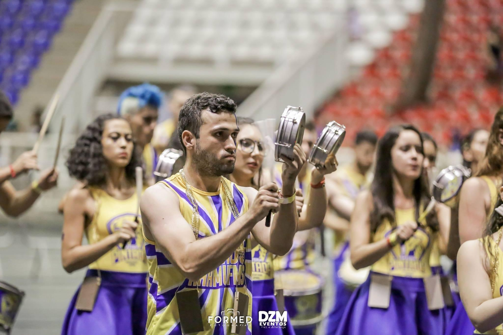
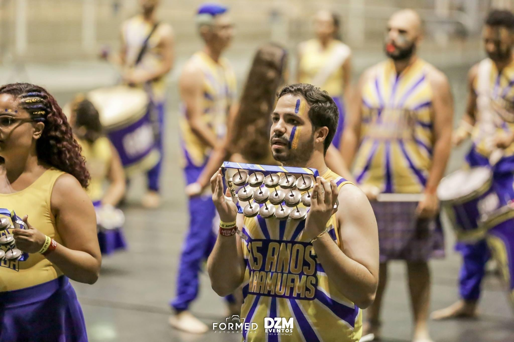
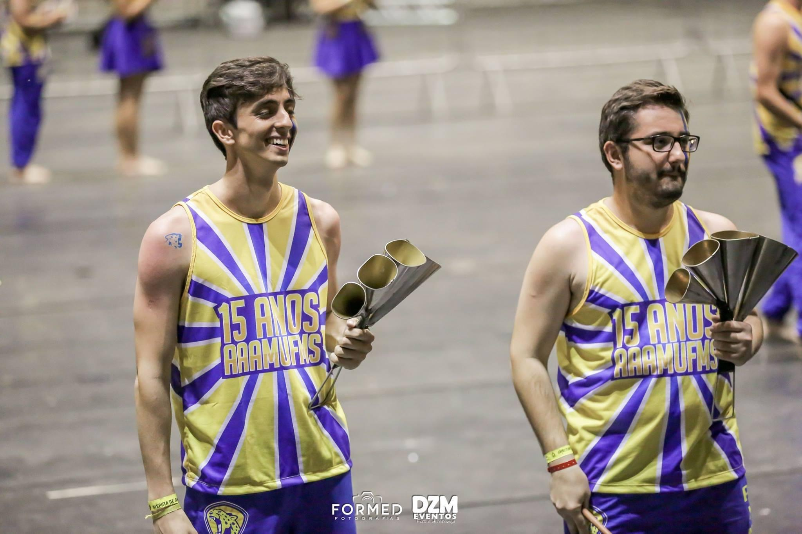
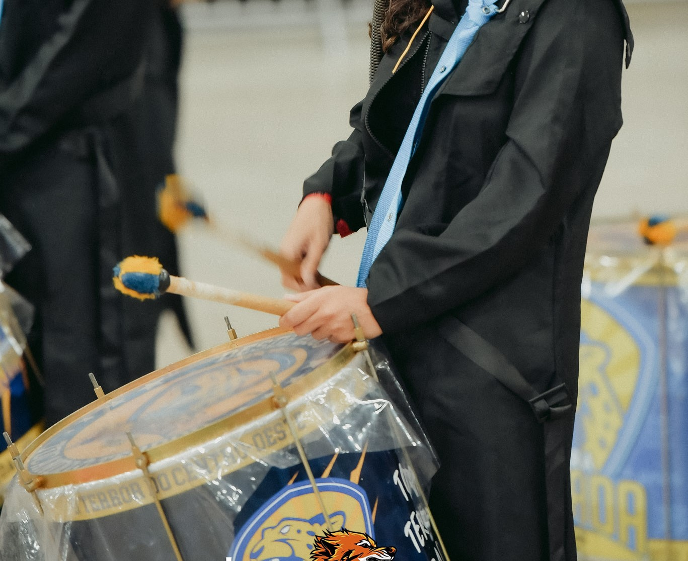

BATERIA
O que é a BATERIA?
A bateria da Atlética foi batizada PINTADA, em alusão à onça
pintada, símbolo do pantanal.
As baterias universitárias começaram como forma de torcida nas arquibancadas dos jogos
interatléticas, mas aos poucos ficaram maiores, mais complexas, e aqui não foi diferente.
Hoje, a grande maioria das atléticas de medicina possuem bateria, com intuito de crescer em
número e tornar suas apresentações cada vez mais elaboradas.
A Pintada há 18 anos vem se aprimorando, ganhando nome e espaço, na cidade de Campo Grande e em
sua principal competição, o Intermed-CO.
O que começou como parte da torcida, é hoje uma competição entre
14 atléticas de medicina no Intermed-CO e 4 no JIMS (Jogos Interatléticas de Mato Grosso do
Sul), que começou em 2013.
O desafio já consolidado no Intermed-CO, conta com jurados oriundos de todo o país e
praticamente um dia inteiro do evento é dedicado à competição. As baterias universitárias também
estão nascendo em inúmeras atléticas
de Campo Grande, com o objetivo de mostrar do que são capazes nos JIMS e demandando atenção
especial da Pintada a este evento que vem crescendo em nossa capital.
Os integrantes da bateria são exclusivamente acadêmicos do curso
de medicina e eventualmente conta com auxílio de profissionais da área para ajudar
durante a elaboração da apresentação. Os acadêmicos dedicam-se arduamente durante o ano em
ensaios semanais, para por fim competirem no auge de nossas competições, o Intermed-CO.

INSTRUMENTOS
Clique para ver os ritmistas
Mestre
Gabriel Galeazzi - MED24
@gabrielgaleazzi
Mestre

O mestre ou diretor de Bateria nomenclatura dada a quem é responsável por conduzir o andamento e ritmo de uma agremiação de escola de samba para ensaios ou desfiles. O show de uma bateria de escola de samba para festa começa com a regência do Mestre com a virtuosidade do ritmita que toca repinique.
Surdo
Lucão - MED24
@lucasdessouza
Muralha - MED26
@d_greatwall01
Gustavo - MED24
@guborgesm
Allan - MED26
@carminatti_allan
Ana Clara - MED27
@anaclaraosc
Ado - MED27
@ado_hoissa
Surdo
No samba os surdos tem a função de marcar o tempo, sendo a referência do pulso, por isso são o coração da bateria. O surdo de 1ª, tradicionalmente, tem afinação mais grave, batendo nos tempos 2 e 4 (tempos fortes), enquanto o surdo de 2ª tem uma afinação mais aguda, batendo nos tempos 1 e 3 (resposta), dando swing ao ritmo binário do samba.
Repique
Vinicius - MED26
@vinicius_c_heck
Bruno - MED24
@bruno_uratani
Repique
O repique ou repinique foi criado pelas baterias de escola de samba para conseguir um som mais agudo. Serve como uma espécie de condutor musical das escolas. É muito conhecido como um instrumento solista ou puxados do samba. Faz parte dos intrumentos da cozinha, junto com as caixas e os surdos.
Caixa
Amanda - MED27
@amandarabelo._
Kelvin - MED24
@kelvinap116
Malu - MED24
@maluvbrandao
André - MED25
@andre_willia
Dudu - MED27
@leduardo_002
Giovanna - MED27
@gisalvatori
Victória - MED26
@_villa1000
Malu - MED27
@malu.assuncao27
Caixa
A caixa produz um som repicado, característico das marchas militares. É um elemento essencial na bateria, na qual é usada geralmente na marcação dos contratempos ou na execução de células rítmicas. É responsável por manter a sustentação do samba, mantendo a base e definindo a característica de uma Bateria.
Tamborim
Yan - MED27
@yan_riken
Ph - MED22
@phvillas
Saldivar - MED27
@matheussaldivar
Vinicius - MED22
@vinimascaros
Vitoria - MED27
@vitorialmda
Nathan - MED25
@nathan_csouza
Sarreta - MED26
@felipesarreta
Tamborim
O tamborim é um instrumento de percurssão que integra o conjunto de instrumentos leves e agudos. Ajuda na condução do ritmo com sua levada constante, o carreteiro. Costuma desenhar a melodia em cima do samba-enredo nas baterias de escola de samba. É um dos naipes, que, comumente, realiza várias coreografias durante as apresentações das Baterias Universitárias.
Chocalho
Guilherme - MED25
@guilhermneves
Igor - MED27
@igorzanata
Rebeca - MED24
@rebecaguidaf
Robson - MED26
@robson.f.r
Chocalho
O chocalho, mais conhecido internamente como Showcalho, auxilia na sustentação e na base do ritmo carreteiro. Faz parte dos instrumentos leves e agudos da bateria. Toca em determinadas partes do samba, normalmente nos refrões, junto com os tamborins, ajudando as caixas na marcação e balanço do samba. É comum o ritmista desse instrumento realizar movimentos coreografados, as famosas dancinhas, em Baterias Universitárias.
Agogô
Ana Júlia - MED25
@anajucostac
Marwim - MED27
@marwimmoura
Ana Paula - MED27
@anaplp_
Agogô
No samba os surdos tem a função de marcar o tempo, sendo a referência do pulso, por isso são o coração da bateria. O surdo de 1ª, tradicionalmente, tem afinação mais grave, batendo nos tempos 2 e 4 (tempos fortes), enquanto o surdo de 2ª tem uma afinação mais aguda, batendo nos tempos 1 e 3 (resposta), dando swing ao ritmo binário do samba.
Terceira Ritmista
Cláudia - MED27
@crm_sc
Jessica - MED23
@jess.soousa
Vittoria - MED25
@vi_marchesi
Terceira Ritmista
É responsável por dar swing à marcação. Toca um ritmo mais complicado e sincopado, preenchendo os tempos e contrapondo à conversa entre os surdos de marcação.
ENSAIOS
Data: Sexta-Feira
Horário: 18h
Toca da Onça (UFMS) - ao lado das piscinas